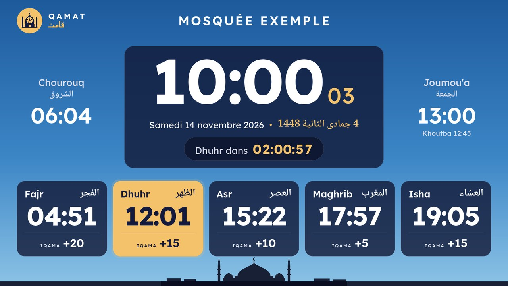
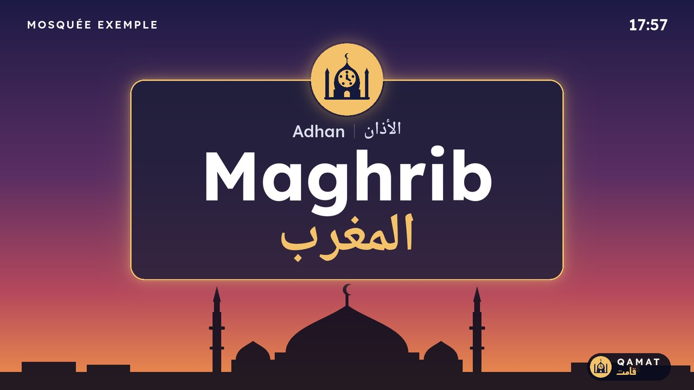
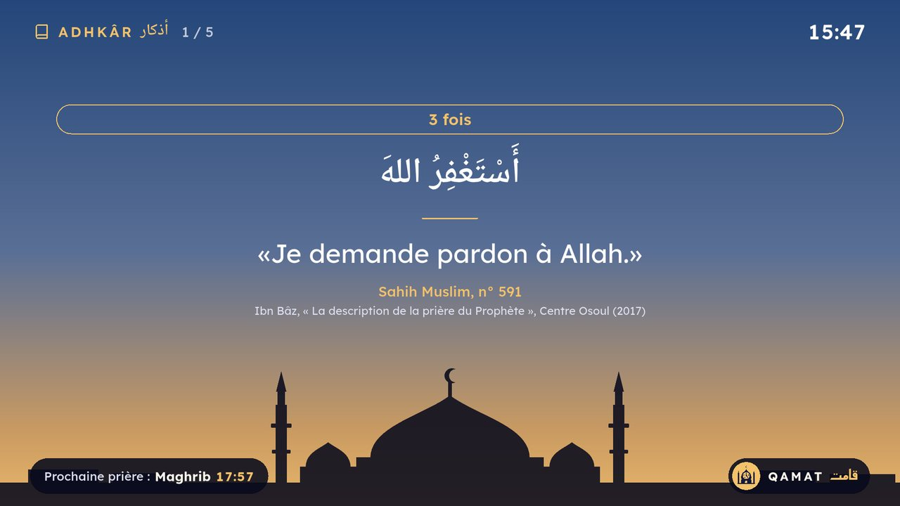
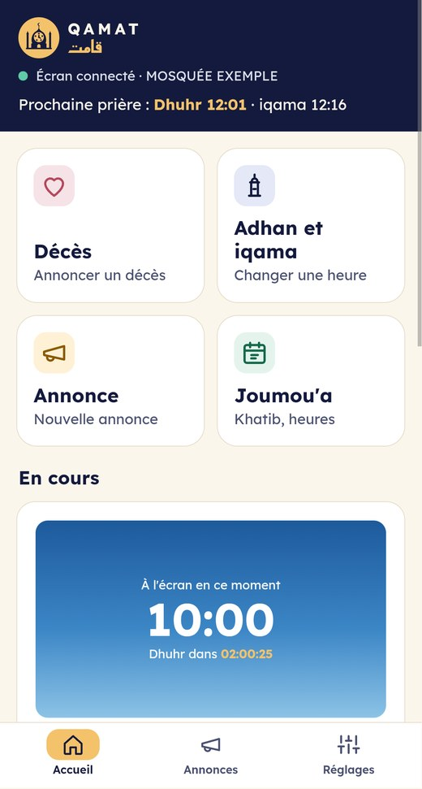
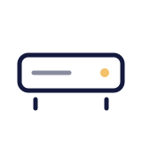
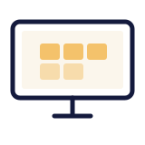
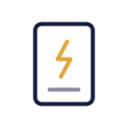

بسم الله الرحمن الرحيم
QAMAT affiche les horaires de prière, l'adhan, l'iqama et les annonces de la mosquée sur un écran. L'imam règle tout depuis son téléphone, sur le Wi-Fi de la mosquée, sans internet.

Exemple d'écran, avec les horaires d'Abidjan.
QAMAT (قامت) vient de la phrase de l'iqama, Qad qâmatiṣ-ṣalâh (قَدْ قَامَتِ الصَّلَاةُ) : « la prière est établie ». C'est le moment que QAMAT annonce à la mosquée.
Captures de l'écran et de la page de gestion.



Le plus simple et le plus sûr : une box, branchée sur la télé.



Coupures de courant : QAMAT revient seul. Un onduleur est conseillé.Tous les cas (PC Windows, vieille télé, projecteur, sans routeur…) sont détaillés dans le guide d'installation.
Sur la box de la mosquée (Android TV ou Google TV), ou sur une télé qui a le Play Store :
Étapes détaillées, réglages de la télé et dépannage : guide d'installation (PDF). Windows : installateur sur demande. Besoin d'aide ? Écrivez-nous sur WhatsApp.
Toujours la dernière version.
Soutenir QAMAT, c'est permettre à d'autres mosquées d'en profiter.
Par Wave ou Orange Money, sur l'un de ces numéros.
Qu'ALLAH vous récompense · جزاكم الله خيرا
Envoyez cette page à un imam, un responsable de mosquée ou un donateur. Le code QR mène ici.